Autocue
Liquidshop 4 Presentation (updated)
Matthias C. Hormann (“Moonbase59”)
2024-06-17
Navigation
- space – next slide
- arrow keys ←→↓↑ – navigate
- Shift+↑↓ – jump to top/bottom of a topic
- Esc – overview
- Ctrl+Mouseclick – zoom in/out
- Home, End – jump to start/end
Autocue
On-the-fly JSON song cue-in, cue-out, overlay, replaygain calculation for Liquidsoap, AzuraCast and other AutoDJ software.
Phew! Now what does that mean?
Better song transitions for Radio Automation (“AutoDJ”).
- Remove silence at start & end of tracks.
- Find ideal point for starting the next track.
- Auto loudness correction (“ReplayGain”).
- Based on loudness perception of the human ear, not simple dB, amplitude or RMS values.
- Can work on-the-fly, without pre-processed files.
And more…
- Keep songs with long endings intact.
- Skip silence within songs (“hidden tracks”).
- Clipping prevention.
- Use file tags for less CPU & higher speed.
- Follows EBU (European Broadcasting Union) recommendations.
The Story
User demand
On the AzuraCast GitHub, the “Professional Crossfade” thread is the single most active discussion.

There is a huge user demand for radio-like, more professional song
transitions!
Previous work
John Warburton (“Warblefly”), an industry professional and Tonmeister, already talked about “Easing automation and improving your sound with Liquidsoap and FFmpeg” in 2021 (Liquidshop 1).
He also made available his pre-processing and playlist annotation scripts. Thanks for sharing, John!
cue_file
Inspired by John’s work, I started writing cue_file in
early February 2024, as a proof of concept, to see if “on-the-fly”
processing could be done.
cue_file is a Python3 script, that in turn uses
ffmpeg and ffprobe to analyse an audio file for cueing
and transition data, based on the loudness perception of the human ear.
It uses the EBU R.128 algorithms and returns JSON data.
Liquidsoap Integration
Many talks and tests with RM-FM, toots and Stefan (gAlleb) brought up two solutions:
- RM-FM and toots worked on an “all-Liquidsoap” approach.
- I favoured and worked on the “external” solution, for more flexibility and pre-processing purposes.
- toots came up with a Liquidsoap integration API for both variants.
Two Integrations
autocue.internal
- No external dependencies (apart from ffmpeg).
- Easy to use.
- Made by RM-FM and toots.
autocue.cue_file
- Requires ffmpeg, ffprobe, Python3 and
cue_file. %includeor copy-paste (AzuraCast).- Relatively easy to use, great defaults.
- Many additional features.
- Perfect for pre-processing.
- Can use file tags for dramatic speed increase.
- Made by Moonbase59 and toots.
Overview
- Many concepts are similar in both implementations.
- Some differ.
- Both use the same integration API.
- It’s your choice.
In this presentation, we will concentrate on autocue.cue_file.
A real example
Let’s visualize what autocue does.
1. Find start point for next song
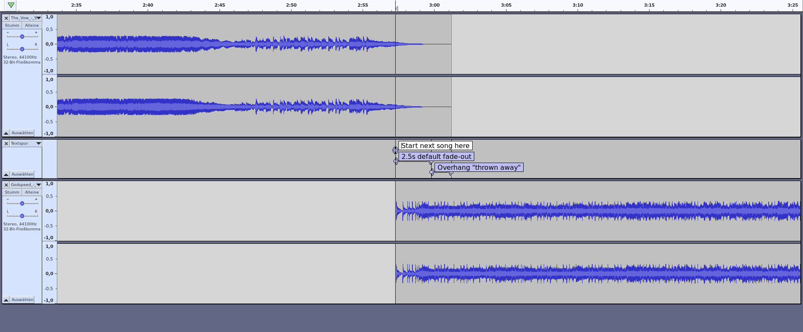
Long smooth endings will be kept intact.
2. Default fade-out
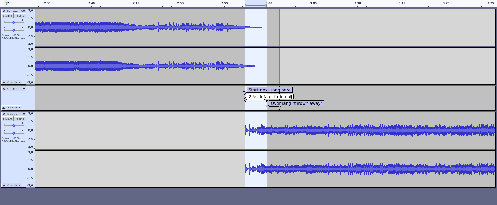
Limits overlay length (too long sounds bad).
3. Cut off “overhang”
The result

Smooth, continuous playout, radio-style.
And perfect transitions—everytime.
How does it work?
Concepts, units, and inner workings explained.
With visual examples.
Volume vs Loudness
- Often misunderstood, and complicated to explain correctly (volume, level, gain, amplitude, dB, SPL, RMS, VU, LUFS, LKFS, …)
Let’s make it easy and just say:
- Volume = quantity or power of a sound
- Loudness = human perception of sound
- Autocue works loudness-based (what you hear).
Units we use
- Amplitude (0.0 .. 1.0, silence to loudest, linear)
- dB (ratio between measurement and reference)
- dBFS (dB relative to full scale)
- LU (loudness units; 1 LU ≙ 1 dB)
- LUFS (loudness units relative to full scale)
- dBFS/LUFS scale (logarithmic):
- 0.0 = loudest signal without distortion
- -96.0 = digital silence for 16-bit audio data
How much is “twice as loud”?
| +10 dB | 2x perceived loudness (psycho-acoustics) | mostly sensed |
| +6 dB | 2x sound pressure (RMS voltage, amplitude) | mostly measured |
| +3 dB | 2x intensity (power, energy) | mostly calculated |
We have to be specific in acoustics!
Analysing a track
Queen: Bohemian Rhapsody 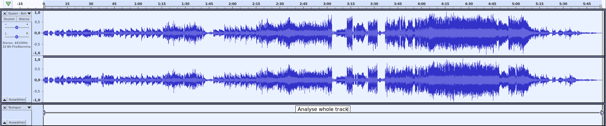
- Analyse whole track, measuring
- momentary loudness of a 400 ms sliding window, every 100 ms
- integrated loudness over total duration, using a noise gate
- loudness range (dynamic range)
- true peak, all channels, using oversampling
- Results in
liq_loudness,liq_loudness_range,liq_true_peak
cue-in point
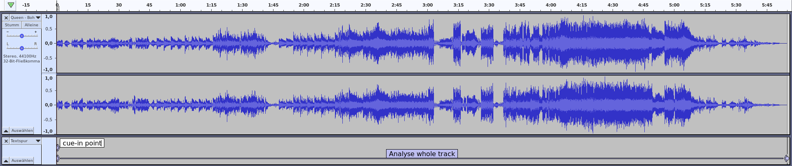
- Silence level: -42 LU referencing integrated track loudness. For a song with -18 LUFS loudness, the noise floor would thus be at -60 LUFS.
settings.autocue.cue_file.silence- Look forward from the start, find where momentary loudness goes above silence level.
- This is our cue-in point (
liq_cue_in).
cue-out point
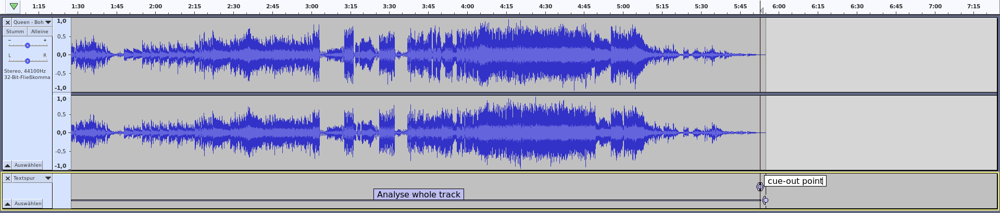
- Look backwards from the end, find where momentary loudness goes above silence level.
- This is our cue-out point (
liq_cue_out).
cue-out point w/ blankskip
Nirvana: Something in the Way / Endless, Nameless 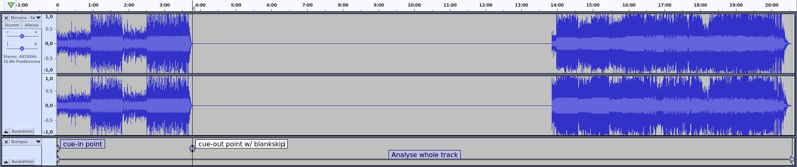
- Look forward from cue-in, find where momentary loudness goes below silence level.
- We’re now cueing out early (at the start of the silent part in the song), avoiding “dead air” for songs with “hidden tracks”.
- Results in
liq_cue_out,liq_blank_skipped.
start overlay point (next song)
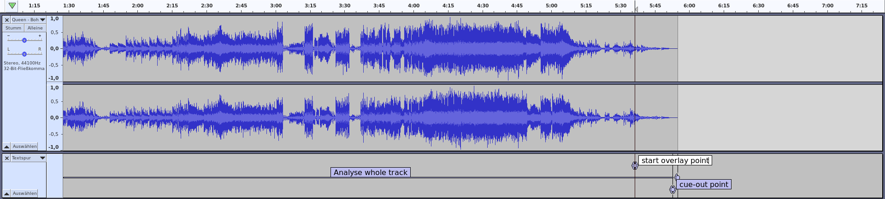
- Overlay level: -8 LU referencing integrated track loudness.
settings.autocue.cue_file.overlay- Look backwards from cue-out, find where momentary loudness goes above overlay level.
- This would be an ideal point to start the next song,
but it might cut short important long song endings (as shown above). - Result in
liq_cross_start_next.
Long tails
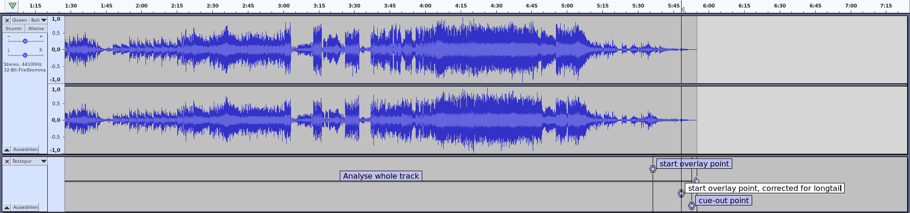
- Check if calculated overlay duration > 15 s (a “long tail”).
settings.autocue.cue_file.longtail- If so, reduce overlay level by an extra -12 LU and repeat the calculation.
settings.autocue.cue_file.overlay_longtail- We now start the next song much later, keeping the song’s “long tail” intact!
liq_longtailshows if a long tail was detected.
fade-out
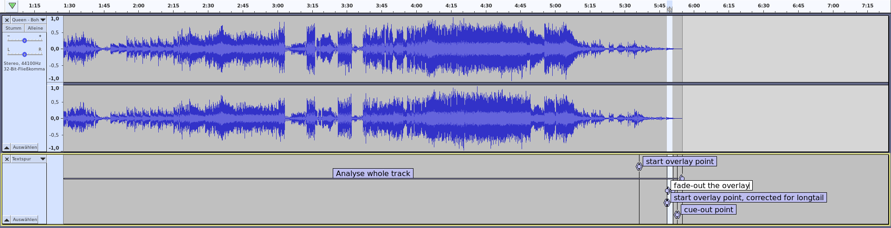
- Apply fade-out, so overlay isn’t too long.
settings.autocue.cue_file.fade_out- Too long overlays sound bad, especially when a jingle follows.
liq_fade_out
correct cue-out
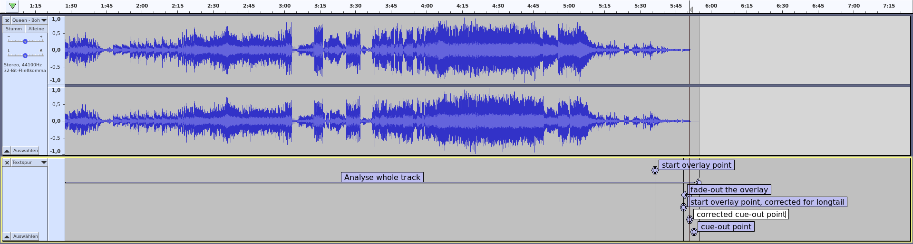
- Correct cue-out (overhang “thrown away”)
amplify & ReplayGain
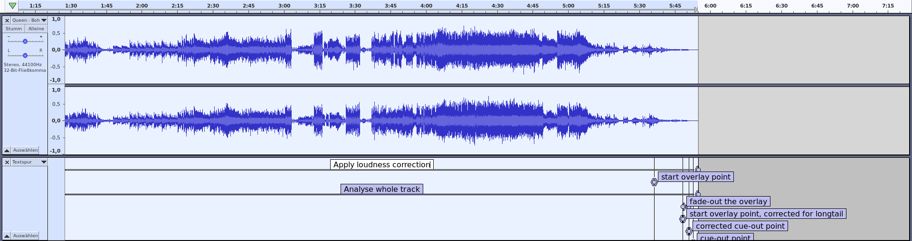
- From the integrated loudness of the track, and the desired loudness target, we can now calculate the amplification and ReplayGain values.
settings.autocue.cue_file.targetsettings.autocue.cue_file.unify_loudness_correction- Recommended loudness targets:
- Europe: -23 LUFS (EBU) or -18 LUFS (EBU, “temporarily allowed”)
- U.S.: -24 LUFS (ATSC), not (yet?) supported in ffmpeg
- Results in
liq_amplify,liq_reference_loudness,replaygain_track_gain,replaygain_reference_loudness.
Clipping prevention
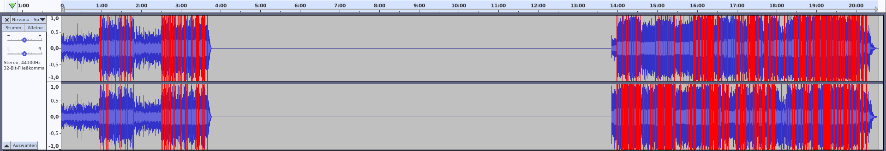
- Modern highly-compressed (“loudness war”) music and file formats using lossy compression can easily clip (distort).
- To prevent this, both loudgain and cue_file can reduce the amplification/ReplayGain values, using the measured true peak values, so that the EBU-recommended -1 dBFS is not exceeded.
settings.autocue.cue_file.noclip- Note: This is just a loudness reduction, not a brickwall limiter or the like!
- Applied correction amount shown in
liq_amplify_adjustment.
Let’s now move to real-life usage
That’s much easier. Promised.
Because autocue does all the work for you.
A minimal example
Using standalone Liquidsoap
Preparation
Copy
cue_fileto appropriate location in the path. On Linux, this is usually one of these:~/bin~/.local/bin/usr/local/bin(needssudo)
Ensure you have Python3, ffmpeg and ffprobe available. On almost all distros, these are pre-installed.
Liquidsoap code
# Minimal example for the `autocue.cue_file` protocol.
# Uses one playlist and outputs to sound card.
%include "autocue.cue_file.liq"
# Ensure AutoCue settings are valid
ignore(check_autocue_setup(shutdown=true, print=true))
enable_autocue_metadata()
radio = playlist("Classic Rock.m3u")
radio = amplify(1., override="liq_amplify", radio)
radio = crossfade(radio)
radio = mksafe(radio)
output(radio)Now that was easy, right?
Usage with AzuraCast
It’s included!
Since 2024-05-21, AzuraCast Rolling Releases have autocue.cue_file included, ready to use!
Switch it on in Edit Station Profile → AutoDJ:

Notes
- No complicated copy-pasting and setup anymore.
- Replaces crossfading code for optimum result.
- Fine-tune your personal settings in Broadcasting → Edit Liquidsoap Configuration, second input box.
- If you used the manual integration before, you must remove all its traces (copy-pasted code, cue_file) before using this.
- Save changes and Restart Broadcasting.
Settings example

I put all settings in, so I don’t have to look them up.
Initial startup
- Initial startup takes a moment longer.
- Initial startup will use more CPU.
- Liquidsoap has to reach out and prepare (i.e., autocue) the next tracks for all your playlists, to be ready for immediate playout in case of fallbacks.
- Don’t be alarmed! CPU load will decrease to normal levels after a few minutes.
Enjoy!
— Break —
Thanks for following so far!
More Tech and a Question & Answer section follow in
Part II
Here be dragons
It’s now time for the technical stuff!
So breathe deeply and get a beverage of your choice.
;-)
Settings
Here’s a list of all possible settings with their defaults.
You can fine-tune everything, but the defaults are great for
nearly all use cases!
# settings.autocue.cue_file.path := "cue_file"
# settings.autocue.cue_file.fade_in := 0.1 # seconds
# settings.autocue.cue_file.fade_out := 2.5 # seconds
# settings.autocue.cue_file.timeout := 60.0 # seconds
# settings.autocue.cue_file.target := -18.0 # LUFS
# settings.autocue.cue_file.silence := -42.0 # LU below track loudness
# settings.autocue.cue_file.overlay := -8.0 # LU below track loudness
# settings.autocue.cue_file.longtail := 15.0 # seconds
# settings.autocue.cue_file.overlay_longtail := -12.0 # extra LU
# settings.autocue.cue_file.sustained_loudness_drop := 40.0 # max. percent drop to be considered sustained
# settings.autocue.cue_file.noclip := false # clipping prevention like loudgain's `-k`
# settings.autocue.cue_file.blankskip := 0.0 # skip silence in tracks
# settings.autocue.cue_file.unify_loudness_correction := true # unify `replaygain_track_gain` & `liq_amplify`
# settings.autocue.cue_file.write_tags := false # write liq_* tags back to file
# settings.autocue.cue_file.write_replaygain := false # write ReplayGain tags back to file
# settings.autocue.cue_file.force_analysis := false # force re-analysis even if tags found
# settings.autocue.cue_file.nice := false # Linux/MacOS only: Use NI=18 for analysis
# settings.autocue.cue_file.use_json_metadata := true # pass metadata to `cue_file` as JSONThe Request Queue
- Autocue, if using
enable_autocue_metadata(), automatically sets
settings.request.prefetch := 2This means we will at all times have the next two requests available for immediate playout. It also gives autocue enough time to process requests in advance.
In AzuraCast, this blocks the first two entries in the “up next” queue from being deleteable.
Commandline usage
You can use cue_file on the commandline.
It returns standard JSON data:
$ cue_file "The_Vow_-_Spread_Some_Love.mp3"
Overlay: -14.72 LUFS, Longtail: -29.73 LUFS, Measured end avg: -30.91 LUFS, Drop: 38.45%
Overlay times: 177.30/180.10/0.00 s (normal/sustained/longtail), using: 180.10 s.
Cue out time: 181.10 s
{"duration": 181.2, "liq_cue_duration": 181.1, "liq_cue_in": 0.0, "liq_cue_out": 181.1, "liq_cross_start_next": 180.1, "liq_longtail": false, "liq_sustained_ending": true, "liq_loudness": "-6.72 LUFS", "liq_loudness_range": "5.86 LU", "liq_amplify": "-11.28 dB", "liq_amplify_adjustment": "0.00 dB", "liq_reference_loudness": "-18.00 LUFS", "liq_blankskip": 0.0, "liq_blank_skipped": false, "liq_true_peak": 1.177, "liq_true_peak_db": "1.42 dBFS"}This is ideal for debugging or pre-processing scripts.
For sorted, more human-readable output, use jq -S:
$ cue_file "The_Vow_-_Spread_Some_Love.mp3" | jq -S
Overlay: -14.72 LUFS, Longtail: -29.73 LUFS, Measured end avg: -30.91 LUFS, Drop: 38.45%
Overlay times: 177.30/180.10/0.00 s (normal/sustained/longtail), using: 180.10 s.
Cue out time: 181.10 s
{
"duration": 181.2,
"liq_amplify": "-11.28 dB",
"liq_amplify_adjustment": "0.00 dB",
"liq_blank_skipped": false,
"liq_blankskip": 0,
"liq_cross_start_next": 180.1,
"liq_cue_duration": 181.1,
"liq_cue_in": 0,
"liq_cue_out": 181.1,
"liq_longtail": false,
"liq_loudness": "-6.72 LUFS",
"liq_loudness_range": "5.86 LU",
"liq_reference_loudness": "-18.00 LUFS",
"liq_sustained_ending": true,
"liq_true_peak": 1.177,
"liq_true_peak_db": "1.42 dBFS"
}Use cue_file --help for more information.
$ cue_file --help
usage: cue_file [-h] [-V] [-t TARGET] [-s SILENCE] [-o OVERLAY] [-l LONGTAIL]
[-x EXTRA] [-d DROP] [-k] [-b [BLANKSKIP]] [-w] [-r] [-f] [-n]
[-j JSON]
file
Analyse audio file for cue-in, cue-out, overlay and EBU R128 loudness data,
results as JSON. Optionally writes tags to original audio file, avoiding
unnecessary re-analysis and getting results MUCH faster. This software is
mainly intended for use with my Liquidsoap "autocue:" protocol.
cue_file 4.0.2 supports writing tags to these file types:
.aac, .aif, .aifc, .aiff, .alac, .ape, .asf, .flac, .m2a, .m4a, .m4b, .m4p,
.m4r, .m4v, .mp+, .mp2, .mp3, .mp4, .mpc, .ofr, .ofs, .oga, .ogg, .ogv, .opus,
.spx, .wav, .wma, .wmv, .wv.
More file types are available when Mutagen is installed (True).
positional arguments:
file File to be processed
options:
-h, --help show this help message and exit
-V, --version show program's version number and exit
-t TARGET, --target TARGET
LUFS reference target; -23.0 to 0.0 (default: -18.0)
-s SILENCE, --silence SILENCE
LU below integrated track loudness for cue-in & cue-
out points (silence removal at beginning & end of a
track) (default: -42.0)
-o OVERLAY, --overlay OVERLAY
LU below integrated track loudness to trigger next
track (default: -8.0)
-l LONGTAIL, --longtail LONGTAIL
More than so many seconds of calculated overlay
duration are considered a long tail, and will force a
recalculation using --extra, thus keeping long song
endings intact (default: 15.0)
-x EXTRA, --extra EXTRA
Extra LU below overlay loudness to trigger next track
for songs with long tail (default: -15.0)
-d DROP, --drop DROP Max. percent loudness drop at the end to be still
considered having a sustained ending. Such tracks will
be recalculated using --extra, keeping the song ending
intact. Zero (0.0) to switch off. (default: 40.0)
-k, --noclip Clipping prevention: Lowers track gain if needed, to
avoid peaks going above -1 dBFS. Uses true peak values
of all audio channels. (default: False)
-b [BLANKSKIP], --blankskip [BLANKSKIP]
Skip blank (silence) within track if longer than
[BLANKSKIP] seconds (get rid of "hidden tracks"). Sets
the cue-out point to where the silence begins. Don't
use this with spoken or TTS-generated text, as it will
often cut the message short. Zero (0.0) to switch off.
Omitting [BLANKSKIP] defaults to 5.0 s. (default: 0.0)
-w, --write Write Liquidsoap liq_* tags to file. Ensure you have
enough free space to hold a copy of the original file.
(default: False)
-r, --replaygain Write ReplayGain tags to file (track only, no album).
Useful if your files have no previous RG tags. Only
valid if -w/--write is also specified. (default:
False)
-f, --force Force re-analysis, even if tags exist (default: False)
-n, --nice Linux/MacOS only: Use nice? Will run analysis at nice
level 18. (default: False)
-j JSON, --json JSON Read/override tags from a JSON file. Use - to read
from stdin. Intended for pre-processing software which
can, for instance, fill in values from their database
here. (default: None)
Note cue_file will use the LARGER value from the sustained ending and longtail
calculations to set the next track overlay point. This ensures special song
endings are always kept intact in transitions.
cue_file 4.0.2 knows about these tags:
duration, liq_amplify, liq_amplify_adjustment, liq_blank_skipped,
liq_blankskip, liq_cross_duration, liq_cross_start_next, liq_cue_duration,
liq_cue_in, liq_cue_out, liq_fade_in, liq_fade_out, liq_hook1_in,
liq_hook1_out, liq_hook2_in, liq_hook2_out, liq_hook3_in, liq_hook3_out,
liq_longtail, liq_loudness, liq_loudness_range, liq_ramp1, liq_ramp2,
liq_ramp3, liq_reference_loudness, liq_sustained_ending, liq_true_peak,
liq_true_peak_db, r128_track_gain, replaygain_reference_loudness,
replaygain_track_gain, replaygain_track_peak, replaygain_track_range.
The absolute minimum set to (possibly) avoid a re-analysis is:
duration, liq_cross_start_next, liq_cue_in, liq_cue_out,
replaygain_track_gain.
A full audio file analysis can take some time. cue_file tries to avoid a
(re-)analysis if all required data can be read from existing tags in the file.
Please report any issues to https://github.com/Moonbase59/autocue/issuesMetadata
Metadata is used in a prioritized manner,
so parameters can easily be stored
and overridden if needed.
The priorities are, from low to high:
- Metadata calculated by
cue_file - Metadata stored in file tags
- Metadata given in annotations
This means:
- Tags in files can override
cue_filebehaviour, and allow it to just use these values instead of doing a costly re-analysis. - The user can still override these by using annotations. This mechanism is also used by AzuraCast’s Visual Cue Editor, so the user settings always “win” over defaults or stored tags.
Using pre-tagged files is fast!

Nirvana song: 222 times faster!
cue_file is “intelligent”
- Depending on requested parameters and stored file tags, it tries to avoid a costly re-analysis.
Examples:
- Needed file tags missing → new analysis (slow)
- Tags fit request → use tags, no new analysis (fast)
- Playout at -14 LUFS requested, tags are -18 LUFS → can recalculate, no new analysis (fast)
- blankskip disabled, tags include blankskip (and vice versa) → re-analysis forced (slow)
Tag example

Tags written by cue_file -w.
ReplayGain Tags

ReplayGain tags are used by cue_file
but only written back to audio files on request.
This preserves your data from unintended changes.
Annotation example
uri = "/home/matthias/Musik/Other/Jingles/Short"
jingles = playlist(prefix='annotate:liq_blankskip=0.0,'
^ 'liq_fade_in=0.10,liq_fade_out=0.10'
^ ':', uri)A jingles playlist: We want to disable blank skipping and set fade-in and fade-out times to 0.1 s, respectively.
AzuraCast Visual Cue Editor

Values set here are used as annotations, which have the highest
priority. Just what we want.
Metadata categories
Basically, we use three types of metadata:
- “Switches” that control autocue functionality, on a per-file or per-playlist basis.
- Results that are used in further playout processing.
- Informational metadata that might come in handy.
“Switches”
liq_blankskip(float)
Sets blank skipping min. duration (0.0=disable)liq_cue_file(bool)
Enables/disables autocue (i.e., for large video files)- AzuraCast
jingle_mode(bool)
Disables blank skipping for AzuraCast “Jingle Mode” playlists - SAM Broadcaster
songtype(char)
Disables blank skipping for song types other than “S” (Song)
Results
duration(s)liq_amplify(dB)liq_amplify_adjustment(dB)liq_cross_start_next(s)liq_cue_in(s)liq_cue_out(s)liq_reference_loudness(LUFS)replaygain_track_gain(dB)replaygain_reference_loudness(LUFS)
Informational
liq_blank_skipped(bool)liq_cue_duration(s)liq_longtail(bool)liq_sustained_ending(bool)liq_loudness(LUFS)liq_loudness_range(LU)liq_true_peak(dBFS)
Others
There are a plethora of other metadata that are either used internally, or reserved for future expansion.
Fading data (duration, type, curve), cross duration, Opus Gain, ramp and hook points belong to this category.
The logfile
- The Liquidsoap log file clearly shows autocue’s workings.
- It’s an invaluable tool for diagnosing problems.
- Logging Levels:
- 2: Severe (errors/problems detected)
- 3: Important (autocue information and results)
- 4: Info (for debugging, lots of output)
Log: autocue.cue_file

Shows autocue information and results
Log: show_meta

Shows final values used in playout
(liq_* & replaygain metadata)
Download, Documentation
GitHub repo:
https://github.com/Moonbase59/autocue/
Docs & Examples on GitHub

Docs & Examples on GitHub

Roadmap
Scrapautocue2.autocue.cue_fileis the supported integrated solution for LS 2.2.5 & newer.Update documentation.Fix “double autocue” issue.- Fix “new fade-in > old fade-out” issue with toots.
- Testing with LS 2.3.x.
AzuraCast integration with BusterNeece.(WIP)
Questions & Answers
Links
- Liquidsoap: https://github.com/savonet/liquidsoap
- AzuraCast: https://github.com/AzuraCast/AzuraCast
- Autocue: https://github.com/Moonbase59/autocue
- I’m also on the Liquidsoap and AzuraCast servers on Discord, as “Moonbase59”.
- This presentation is available as:
- recording on YouTube (check the Liquidshop 4 page)
- web page (reveal.js)
- downloadable PDF file
Thanks!
Matthias C. Hormann (“Moonbase59”)
If you like what you got, please consider to  . Thank you! ❤️
. Thank you! ❤️